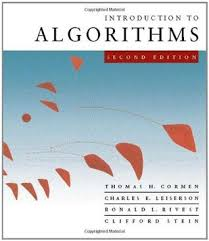

Author: CLRS (Cormen, Leiserson, Rivest, Stein)
Category: Computer Science
Description: Widely used as a textbook in universities, this book covers a broad range of algorithms in depth, from sorting to graph theory.
Status: Not Available
Note: This book is currently borrowed and cannot be selected.